TransformToIqt dialog.
Table of Contents
| Name | Direction | Type | Default | Description |
|---|---|---|---|---|
| SampleWorkspace | Input | MatrixWorkspace | Mandatory | Name for the sample workspace. |
| ResolutionWorkspace | Input | MatrixWorkspace | Mandatory | Name for the resolution workspace. |
| EnergyMin | Input | number | -0.5 | Minimum energy for fit. Default=-0.5 |
| EnergyMax | Input | number | 0.5 | Maximum energy for fit. Default=0.5 |
| BinReductionFactor | Input | number | 10 | Decrease total number of spectrum points by this ratio through merging of intensities from neighbouring bins. Default=1 |
| NumberOfIterations | Input | number | 50 | Number of randomised simulations for monte-carlo error calculation. |
| SeedValue | Input | number | 89631139 | Seed for pseudo-random number generator in monte-carlo error calculation. |
| ParameterWorkspace | Output | TableWorkspace | Table workspace for saving TransformToIqt properties | |
| OutputWorkspace | Output | MatrixWorkspace | Output workspace | |
| DryRun | Input | boolean | False | Only calculate and output the parameters |
| CalculateErrors | Input | boolean | True | Calculate monte-carlo errors. |
This algorithm transforms either a reduced (_red) or S(Q, w) (_sqw) workspace to a I(Q, t) workspace.
The measured spectrum  is proportional to the four
dimensional convolution of the scattering law
is proportional to the four
dimensional convolution of the scattering law  with the
resolution function
with the
resolution function  of the spectrometer via
of the spectrometer via  , so can be obtained,
in principle, by a deconvolution in
, so can be obtained,
in principle, by a deconvolution in  and
and  . The method
employed here is based on the Fourier Transform (FT) technique [6,7]. On Fourier
transforming the equation becomes 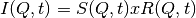 where the
convolution in -space is replaced by a simple multiplication in
. The method
employed here is based on the Fourier Transform (FT) technique [6,7]. On Fourier
transforming the equation becomes 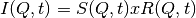 where the
convolution in -space is replaced by a simple multiplication in
 -space. The intermediate scattering law
-space. The intermediate scattering law  is then
obtained by simple division and the scattering law itself
can be obtained by back transformation. The latter however is full of pitfalls
for the unwary. The advantage of this technique over that of a fitting procedure
such as SWIFT is that a functional form for does not have to be
assumed. On IRIS the resolution function is close to a Lorentzian and the
scattering law is often in the form of one or more Lorentzians. The FT of a
Lorentzian is a decaying exponential, 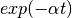 , so that plots of
is then
obtained by simple division and the scattering law itself
can be obtained by back transformation. The latter however is full of pitfalls
for the unwary. The advantage of this technique over that of a fitting procedure
such as SWIFT is that a functional form for does not have to be
assumed. On IRIS the resolution function is close to a Lorentzian and the
scattering law is often in the form of one or more Lorentzians. The FT of a
Lorentzian is a decaying exponential, 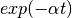 , so that plots of
 against t would be straight lines thus making interpretation
easier.
against t would be straight lines thus making interpretation
easier.
In general, the origin in energy for the sample run and the resolution run need
not necessarily be the same or indeed be exactly zero in the conversion of the
RAW data from time-of-flight to energy transfer. This will depend, for example,
on the sample and vanadium shapes and positions and whether the analyser
temperature has changed between the runs. The procedure takes this into account
automatically, without using an arbitrary fitting procedure, in the following
way. From the general properties of the FT, the transform of an offset
Lorentzian has the form 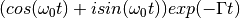 , thus taking the modulus produces the exponential  which is the required function. If this is carried out for both sample and
resolution, the difference in the energy origin is automatically removed. The
results of this procedure should however be treated with some caution when
applied to more complicated spectra in which it is possible for
to become negative, for example, when inelastic side peaks are comparable in
height to the elastic peak.
which is the required function. If this is carried out for both sample and
resolution, the difference in the energy origin is automatically removed. The
results of this procedure should however be treated with some caution when
applied to more complicated spectra in which it is possible for
to become negative, for example, when inelastic side peaks are comparable in
height to the elastic peak.
The interpretation of the data must also take into account the propagation of
statistical errors (counting statistics) in the measured data as discussed by
Wild et al [1]. If the count in channel  is
is  , then
, then
 where
where  is the mean value and
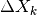 the error. The standard deviation for channel is
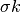
is the mean value and
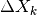 the error. The standard deviation for channel is
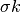  which is assumed to be given by
which is assumed to be given by
 . The FT of is defined by
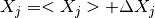 and the real and imaginary parts denoted by
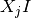 and respectively. The standard deviations on
. The FT of is defined by
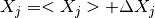 and the real and imaginary parts denoted by
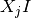 and respectively. The standard deviations on
 are then given by
are then given by  and
and  .
.
Note that 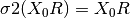 and from the properties of FT
 . Thus the standard deviation of the first coefficient
of the FT is the square root of the integrated intensity of the spectrum. In
practice, apart from the first few coefficients, the error is nearly constant
and close to 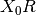. A further point to note is that the errors make
the imaginary part of non-zero and that, although these will be
distributed about zero, on taking the modulus of , they become
positive at all times and are distributed about a non-zero positive value. When
is plotted on a log-scale the size of the error bars increases
with time (coefficient) and for the resolution will reach a point where the
error on a coefficient is comparable to its value. This region must therefore be
treated with caution. For a true deconvolution by back transforming, the data
would be truncated to remove this poor region before back transforming. If the
truncation is severe the back transform may contain added ripples, so an
automatic back transform is not provided.
. Thus the standard deviation of the first coefficient
of the FT is the square root of the integrated intensity of the spectrum. In
practice, apart from the first few coefficients, the error is nearly constant
and close to 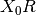. A further point to note is that the errors make
the imaginary part of non-zero and that, although these will be
distributed about zero, on taking the modulus of , they become
positive at all times and are distributed about a non-zero positive value. When
is plotted on a log-scale the size of the error bars increases
with time (coefficient) and for the resolution will reach a point where the
error on a coefficient is comparable to its value. This region must therefore be
treated with caution. For a true deconvolution by back transforming, the data
would be truncated to remove this poor region before back transforming. If the
truncation is severe the back transform may contain added ripples, so an
automatic back transform is not provided.
Example - TransformToIqt with IRIS data.
sample = Load('irs26176_graphite002_red.nxs')
can = Load('irs26173_graphite002_red.nxs')
params, iqt = TransformToIqt(SampleWorkspace=sample,
ResolutionWorkspace=can,
EnergyMin=-0.5,
EnergyMax=0.5,
BinReductionFactor=10)
print('Number of output bins: %d' % (params.cell('SampleOutputBins', 0)))
print('Resolution bins: %d' % (params.cell('ResolutionBins', 0)))
Output:
Number of output bins: 172
Resolution bins: 6
Categories: AlgorithmIndex | Workflow\Inelastic | Workflow\MIDAS
Python: TransformToIqt.py (last modified: 2019-03-28)